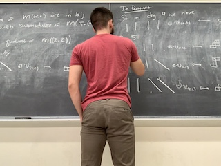

Homepage

My current interests lie in algebraic combinatorics, representation theory and representation stability.
Research
- An infinite antichain in a Gröbner approach to noetherianity of Sym(Sym2(C∞))
In preparation.
- Syzygies of P1×P1: data and conjectures
with Juliette Bruce, Daniel Corey, Daniel Erman, Steve Goldstein, Jay Yang
arXiv
- Equivariant prime ideals for infinite dimensional supergroups
with Andrew Snowden
arXiv
- Representation stability for 0-Hecke algebras
Algebraic Combinatorics, to appear
arXiv (last updated 10/05/2019)
- Computing Schur complexes
with Michael K. Brown, Hang Huang, Michael Perlman, Claudíu Raicu, Steven V Sam, João Pedro Santos
J. Softw. Alg. Geom., 9 (2019), 111--119
arXiv (last updated 7/22/2019) | Journal
- Syzygies of secant ideals of Plucker-embedded Grassmannians are generated in bounded degree
Submitted
arXiv (last updated 3/9/2018)
- The spin-Brauer diagram algebra
J. Algebraic Combin., 50 (2019), no. 2, 191--224
arXiv (last updated 3/31/2017) | Journal
Expository
- The polynomial method in combinatorics
PDF (last updated 5/10/15)
Senior thesis, Advised by Professor Josh Greene